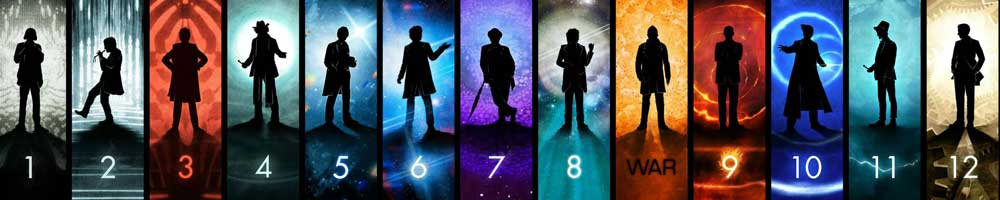

|  |
Home| The Doctors| The Companions| The Villians| Show History |
The CompanionsThe perennial companion figure has been a constant feature in Doctor Who since the programme's inception in 1963. Generally human, one of the roles of the companion is to remind the Doctor of his "moral duty".[93] The Doctor's first companions seen on screen were his granddaughter Susan Foreman (Carole Ann Ford) and her teachers Barbara Wright(Jacqueline Hill) and Ian Chesterton (William Russell). These characters were intended to act as audience surrogates, through which the audience would discover information about the Doctor who was to act as a mysterious father figure.[93] The only story from the original series in which the Doctor travels alone is The Deadly Assassin. Notable companions from the earlier series included Romana (Mary Tamm and Lalla Ward), a Time Lady; Sarah Jane Smith (Elisabeth Sladen); and Jo Grant (Katy Manning). Dramatically, these characters provide a figure with whom the audience can identify, and serve to further the story by requesting exposition from the Doctor and manufacturing peril for the Doctor to resolve. The Doctor regularly gains new companions and loses old ones; sometimes they return home or find new causes — or loves — on worlds they have visited. Some have died during the course of the series. Companions are usually human, or humanoid aliens. Since the 2005 revival, The Doctor generally travels with a primary female companion, who occupies a larger narrative role. Steven Moffat described the companion as the main character of the show, as the story begins anew with each companion and she undergoes more change than the Doctor.[94][95] The primary companions of the Ninth and Tenth Doctors were Rose Tyler (Billie Piper), Martha Jones (Freema Agyeman), and Donna Noble (Catherine Tate) with Mickey Smith (Noel Clarke), Jackie Tyler (Camille Coduri) and Jack Harkness(John Barrowman) recurring as secondary companion figures.[96] Lindy A. Orthia observes that these characters introduced characteristics previously unseen in the companion figure as each of them is either black, queer and/or part of the unskilled working class.[96] The Eleventh Doctor became the first to travel with a married couple (Amy Pond (Karen Gillan) and Rory Williams (Arthur Darvill)) whilst out-of-sync meetings with River Song (Alex Kingston) and Clara Oswald (Jenna Coleman) provided ongoing story arcs. Some companions have gone on to re-appear either in the main series, or in spin-offs. Sarah Jane Smith became the central character in The Sarah Jane Adventures (2007-2011) following a return to Doctor Who in 2006. Guest stars in the series included former companions Jo Grant, K-9, and Brigadier Lethbridge-Stewart (Nicholas Courtney). The character of Jack Harkness also served to launch a spin-off, Torchwood, (2006-2011) in which Martha Jones also appeared. |
Brendan Davy Monica DuCong'e Eric Eyler Kayleen Garcia Katie Hyche Ryan Moeller |
Christine O'Brien Alex Recinos Julia Schwartz Madeleine Schwartz Ann Marie Skjold Ashly Wilkins |
[Reference Links] |